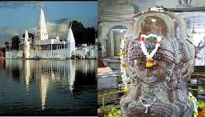
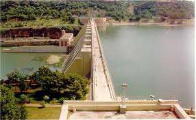

Mandsaur City
Welcome to The City Lord of Pashupatinath
Places of Tourist Interest
Main tourist place
|
|
||||||||||||
|  |
The main attraction of Mandsaur is lord
Pashpupatinath temple. Pashpupatinath is synonymous name of lord shiva. This artistic
effigy is built-up smooth, glowingly dark coppery fiery rock-block. The temple is
situated at the bank of Shivna river. |
|
Nalcha Mata Temple |
|
 |
Nalcha mata temple (3 km from pashupatinath temple) |
|  |
Gandhisagar Dam is situated at a distance
of 168 Km. from the District headquarter. The Dam is constructed on the Chambal
River. Foundation stone for the construction of Gandhi Sagar Dam / Power Station
in the District was laid by the Prime Minister Pandit Jawaharlal Nehru on the 7th
March, 1954. The work was started in 1957 in the power station, while power generation
and its distribution commenced in November, 1960. The total expenditure on the construction
of Gandhi Sagar Dam and Power Station was about Rs. 18 Crores 40 Lakhs. The
expenditure on construction of Power Station was Rs. 4 Crores 80 Lakhs.
|